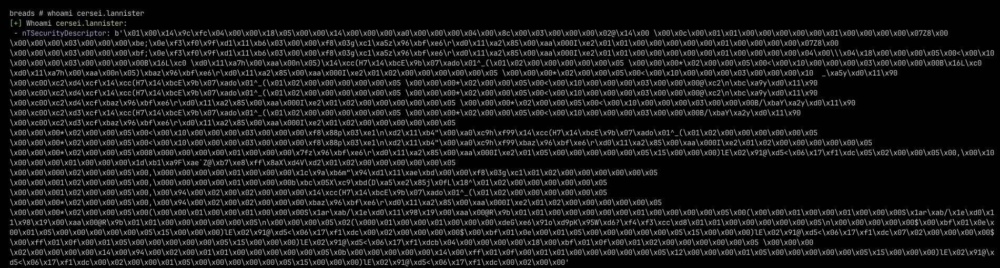
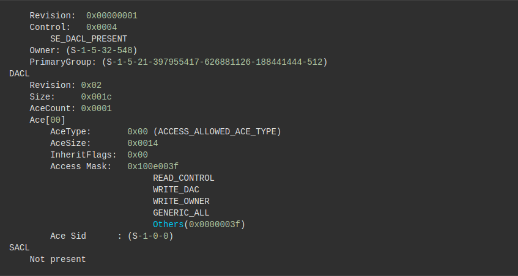
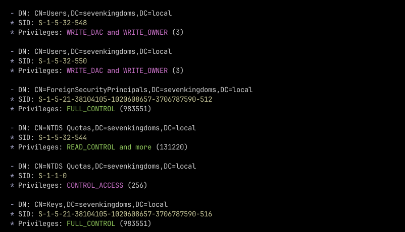

O que é? #
O Security Descriptor ou ntSecurityDescriptor, é um atributo de segurança do Windows que contém uma estrutura de dados representativa das permissões e propriedades daquele objeto em questão. Podemos interpretar o mesmo como uma ideia do escopo de permissões do X sobre Y. O ntSecurityDescriptor está presente desde as versões superiores do Windows Server 2000 e se manteve o mesmo desde então.
O Security Descriptor é um representação compactada binária da segurança associada a objeto pertecente ao ambiente. Para comprovação disso, podemos tentar extrair o Security Descriptor de um usuário ou grupo por meio de uma query LDAP e vermos seu formato puro.
É importante salientar que o ntSecurityDescriptor é utilizado por DACLs, SACLs, e ACL. Esses três atributos são responsáveis por representar as permissões desse objeto consumindo os dados do ntSecurityDescriptor. Essas permissões são de quem representa aquele objeto, quem pode acessar esse objeto e o que pode fazer com o mesmo, informações de auditoria do objeto e restrições sobre tal.
- ACL: Access Control List é uma lista de proteções de seguranças que são aplicadas sobre um objeto. Deve-se entender que objetos podem ser um arquivo, processo, evento, ou tudo aquilo que também tiver um “Security Descriptor”;
- ACE: Access Control Entries são entrada de dados de ACLs (Access Control List). Uma ACE contém uma lista de permissões sobre um SID que irá identificar se tais permissões participam dos escopos: Allowed, Denied ou Audited;
- DACL: Discretionary Access Control List é o responsável por identificar os administradores ou objetos que tem permissões ou não sobre objetos protegidos. Caso um processo tente interagir com um objeto protegido, o sistema irá requisitar ao que ACE busque na DACL se aquele autor em questão tem as permissões necessárias;
- SACL: System Access Control List é uma lista que permite que adminstradores registrem tentativas de interação ou acesso a um objeto protegido. Cada ACE irá especificar as tentativas de acesso sobre aquele item e fará com que o sistema armazene essa tentativa no Security Event Log;
De acordo com a Microsoft, o ntSecurityDescriptor utiliza de um sistema chamado Security Descriptor String Format. O Security Descriptor String Format é um formato ou sistema de texto responsável por armazenar ou transportar a informação do ntSecurityDescriptor. Isso é feito por duas funções chamadas ConvertSecurityDescriptorToStringSecurityDescriptorA e ConvertStringSecurityDescriptorToSecurityDescriptorA. Essas duas funções são utilizadas para o trabalho de conversão dos Security Descriptor.
É possível transformar um “String Security Descriptor“ para um Security Descriptor Absoluto através de outra função que é chamada de MakeAbsoluteSD. Essas três funções iram retornar valores não nulos, caso todos os argumentos necessários forem repassados e serem válidos. Com o seu retorno, é possível extrair o formato do Security Descriptor.
Para que as funções citadas acima possam descrever o formato do Security Descriptor, é utilizado a tecnologia SDDL (Security Descriptor Definition Language) que irá fazer essa tradução e permitir que as funções possam representar elas em texto. Aqui estão alguns exemplos de SDDL retirados do artigo da Microsoft:
Exemplos #
Regra: Qualquer usuário poderá executar esse objeto se ele seguir as seguintes condições:
- O título dele ser PM
- A divisão ou setor dele for Financeiro ou Vendas
d:(XA; ;FX;;;S-1-1-0; (@User.Title=="PM" && (@User.Division=="Financeiro" || @User.Division =="Vendas")))
Regra 2: Permite leitura do objeto se o usuário seguir as seguintes condições:
- Seu login ter sido feito a partir de um Smart Card
- É pertencente do grupo Backup Operator
- Está conectado em uma máquina com o BitLocker ativo
D:(XA; ;FR;;;S-1-1-0; (Member_of {SID(Smartcard_SID), SID(BO)} &&@Device.Bitlocker))
Qual a sua importância? #
Através do Security Descriptor, pode-se compreender qual o escopo de privilégios que aquele ativo terá sobre um item de seu interesse ou que haverá uma possível interação. Com isso em mente, a Microsoft desenvolveu esse atributo expressivo para que fosse alocado sobre os objetos do ambiente Active Directory e pudesse trabalhar as questões de controle de acesso. Atualmente, ele é utilizado por outras classes do ambiente Active Directory como:
- samDomainBase: A classe base para a definição de domínios;
- securityPrincipal: Armazena informações de segura sobre um objeto;
- top: A classe de mais alto nível que é de onde todas as classes derivam;
Hoje em dia, ferramentas como o BloodHound usufruem de ACEs e DACLs para identificar as permissões que um objeto tem sobre o outro, e assim, poder construir caminhos de exploração por meio de fragilidades do objeto X sobre o objeto Y.
Trabalhando com o ntSecurityDescriptor #
O ntSecurityDescriptor segue o seguinte formato O:BAG:BAD:S:, onde:
- O: Owner
- BAG e BAD serão utilizados para representar quem tem permissão de interação e quem não tem sobre aquele objeto. G é Granted e D é Deny.
- S representará o SACL.
O atributo Owner irá indicar o proprietário por meio do SID do objeto, o BAG e o BAD são especificadores de controle de acesso e o SACL para poder armazenar as tentativas de interação com o objeto alvo. De uma maneira simples, se expandíssemos um Security Descriptor, esse seria o formato dele:
Como podemos ver, o Owner e PrimaryGroup são as representações do proprietário daquele Security Descriptor. Com isso, podemos partir para a leitura da DACL que trará informações sobre a ACE do objeto protegido. Em um contexto de segurança ofensiva, o que diretamente nos importa seria o Access Mask dessa ACE.
Com isso em mente, podemos capturar o Security Descriptor de objetos (usuários, grupos, etc) e lermos suas permissões e identificar possíveis fragilidades que atacantes podem utilizar para escalonar privilégios dentro de um ambiente Active Directory. Para isso, incrementei um módulo na minha ferramenta breads que irá buscar pelo valor do ntSecurityDescriptor de todos os objetos do ambiente através da query objectClass=(*) e checar as permissões se baseando no valor de ACE_MASK. Esses valores são hexadecimais que quando calculados, podem ser lidos como bits representantes de permissão. Essa é a tabela de permissões:
Esse é o pedaço do código da minha ferramenta que irá realizar essa busca. O object_ntsd representa o acesso ao atributo ntSecurityDescriptor daquele objeto; já a variável sd está utilizando de uma classe do projeto Impacket para realizar a leitura dos bytes do Security Descriptor. Por fim, percorremos pelas chaves retornada da variável sd e acessamos seus valores respectivamente.
# ...
object_ntsd = attribute["attributes"]["nTSecurityDescriptor"]
sd = SR_SECURITY_DESCRIPTOR(data=object_ntsd)
if sd["Dacl"]:
for ace in sd["Dacl"].aces:
ace_object = ace["Ace"] # Ace_Object Vars: Mask, Sid
ace_mask = ace_object["Mask"]["Mask"]
Após um tratamento sobre os hexadecimais retornados e quais são suas representações com base na documentação da Microsoft, podemos esperar um resultado como esse abaixo. Ressalto que foi utilizado uma conta participante do grupo de Domain Admins.
Conclusão #
Assim, podemos compreender a relevância do ntSecurityDescriptor no Active Directory e como podemos utilizar dele para encontrar meios para realizar uma escalação de privilégios por meio de objetos presentes no ambiente. Como citado anteriormente, a ferramenta BloodHound faz um ótimo trabalhando usufruindo desse atributo para construir caminhos e gráficos com base nas informações coletadas do ambiente. Entende-se que tudo isso é principalmente útil para atacantes, todavia, esse tipo de processo também é de grande utilidade também para os times de operações defensivas, visto que poderão encontrar fragilidades na arquitetura monitorada.
Referências #
- https://learn.microsoft.com/en-us/windows/win32/adschema/a-ntsecuritydescriptor
- https://learn.microsoft.com/en-us/windows/win32/adschema/c-samdomainbase
- https://learn.microsoft.com/en-us/windows/win32/adschema/c-top
- https://learn.microsoft.com/en-us/windows/win32/secauthz/security-descriptor-string-format?redirectedfrom=MSDN
- https://learn.microsoft.com/en-us/windows/win32/secgloss/a-gly
- https://learn.microsoft.com/en-us/windows/win32/secgloss/d-gly
- https://learn.microsoft.com/en-us/windows/win32/secauthz/access-control-lists
- https://learn.microsoft.com/en-us/openspecs/windows_protocols/ms-dtyp/4f4251cc-23b6-44b6-93ba-69688422cb06
- https://learn.microsoft.com/en-us/openspecs/windows_protocols/ms-dtyp/7d4dac05-9cef-4563-a058-f108abecce1d
- https://github.com/fortra/impacket/blob/f8899e65f16c50b871863528d419cfb701a5a3e3/impacket/ldap/ldaptypes.py
- https://learn.microsoft.com/en-us/windows/win32/api/iads/ne-iads-ads_rights_enum
- https://www.installsetupconfig.com/win32programming/accesscontrollistacl2_1.html